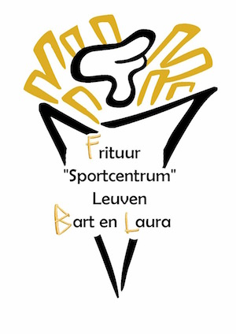
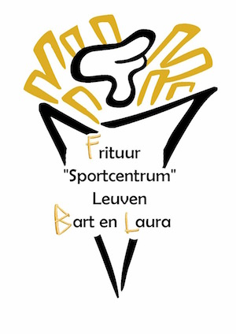

Openingsuren
| Dag | Openingsuren |
|---|---|
| Maandag | Gesloten |
| Dinsdag | van 11u30 tot 14u00 en van 16u30 tot 22u |
| Woensdag | van 11u30 tot 14u00 en van 16u30 tot 22u |
| Donderdag | van 11u30 tot 14u00 en van 16u30 tot 22u |
| Vrijdag | van 11u30 tot 14u00 en van 16u30 tot 22u |
| Zaterdag | van 11u30 tot 14u00 en van 16u30 tot 22u |
| Zondag | Gesloten |
| Feestdag | Gesloten |
Tussen Kerstmis en Nieuwjaar zijn wij steeds gesloten. Tijdens het bouwverlof nemen wij naar jaarlijkse traditie ook twee weken rust. Wij posten lastminute wijzingen steeds Op onze facebookpagina.